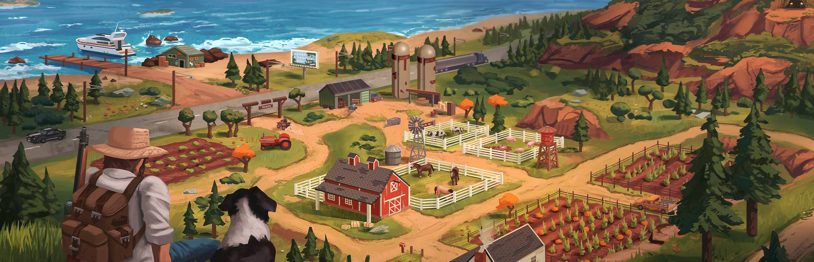

The Ranchers Release Time & Launch Checklist

Release time by region
The announced Early Access unlock time is July 30, 2026 at 10:00 AM Pacific Time. That converts to the following common launch windows:
| Region | Local time | Date |
|---|---|---|
| Pacific Time | 10:00 AM | July 30 |
| Eastern Time | 1:00 PM | July 30 |
| UTC | 5:00 PM | July 30 |
| Central Europe | 7:00 PM | July 30 |
| China Standard Time | 1:00 AM | July 31 |
If the store button does not change immediately, do not panic. Steam launches often roll through client cache, regional mirrors, and app depots over a short window. Restarting Steam is usually a better first move than reinstalling anything.
What to prepare before launch
The best launch prep is boring: make sure the game is easy to install, your co-op group knows who is hosting, and your first session has one simple goal. You do not need a full min-max spreadsheet before touching the game.
- Wishlist and follow the Steam page. That keeps the store page easy to find and surfaces last-minute developer notes.
- Decide solo or co-op first. Solo is better for learning systems; co-op is better for covering chores and exploring quickly.
- Pick a host before launch. In most farming sims with shared worlds, the host's save becomes the source of truth. Avoid switching hosts casually.
- Agree on the first-session goal. A good first goal is simple: finish the tutorial, find the main shops, plant a starter crop, and avoid buying animals blind.
- Keep notes on real numbers. Crop prices, growth days, animal upkeep, and product cycles are the values that will matter first.
What to do in the first hour
The first hour should answer orientation questions, not optimize everything. Use this order:
- Complete the tutorial prompts. Tutorials often unlock tools, shops, or starter resources.
- Walk the ranch boundaries. Learn where the house, water, tillable soil, roads, and storage are.
- Visit town before spending heavily. Find the seed seller, animal seller, building vendor, and request board.
- Plant a small starter field. A small watered field beats a giant field you cannot maintain.
- Record the first shop prices. Those values feed directly into the profit calculator.
What this site will verify first
Because this is an unofficial guide, exact data only becomes useful when it is confirmed. The first pass after launch will focus on the values that help real players make decisions:
- Crop basics: seed cost, growth days, season, first harvest sell price, and whether a crop regrows.
- Animal basics: purchase cost, housing requirement, feed/upkeep, product cycle, and product sell price.
- Co-op behavior: how hosting works, whether progress is host-bound, and how shared money/inventory behaves.
- Early money route: which first-week actions produce reliable income without risky assumptions.
Until those numbers are confirmed, the crop database and animal database intentionally avoid fake values. If you find a confirmed number, send it through the contact page with a screenshot.
Release FAQ
Is The Ranchers out now?
The announced Early Access unlock is July 30, 2026 at 10:00 AM PT / 7:00 PM CEST. In China, that is July 31 at 1:00 AM CST.
Should I start solo or co-op?
If you want to learn quietly, start solo. If your group already knows farming sims, co-op is fine from the first session as long as one person hosts and everyone agrees on spending rules.
Why are the database numbers still pending?
Unverified values are worse than no values. The database pages are prepared for launch data, but exact prices and cycles will be added only after they are confirmed from the Early Access build or official sources.
Related guides
- Beginner's Guide — a practical first-week roadmap.
- Money-Making Guide — how to think about profit per day before exact values are known.
- Multiplayer & Co-op Guide — role splits and shared-ranch rules.
- Profit Calculator — plug in launch-day numbers as you find them.